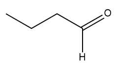
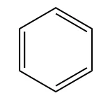

Cadeias Carbônicas
Informações e Classificações de Cadeias Carbônicas.

Para Começar
A classificação das cadeias carbônicas apresenta quatro formas básicas: normais ou ramificadas, abertas ou fechadas, saturadas ou insaturadas, homogêneas ou heterogêneas.
As classificações das cadeias carbônicas ocorrem devido à versatilidade do átomo de carbono em produzir ligações covalentes. Assim sendo, o carbono pode produzir cadeias tridimensionais, das mais variadas, as quais apresentarão estruturas distintas.
Cadeia normal ou cadeia ramificada
As cadeias normais são as que possuem os carbonos alinhados de forma contínua, percebendo-se apenas uma única direção possível entre os carbonos da extremidade. Alguns autores também se referem a elas como cadeias lineares. Uma característica marcante das cadeias normais é a presença exclusiva de carbonos primários e secundário. Como no exemplo:
Se em, pelo menos, um dos carbonos secundários de uma cadeia normal houver a ligação de um radical, transformando-o carbono em terciário, a cadeia se torna ramificada. As cadeias ramificadas, diferentemente das normais, apresentam carbonos terciários ou quaternários. Como no exemplo:

Cadeia aberta ou cadeia fechada
As cadeias abertas, como o próprio nome nos faz perceber, são aquelas cujos carbonos de extremidade não se ligam. Também é possível se referir a elas como acíclicas. Exemplo:
Já nas cadeias fechadas, ou cíclicas, os carbonos da extremidade se ligam entre si formando ciclos. Exemplo:
As cadeias cíclicas podem também ser dividias em Aromáticas e Alicíclicas:
- Aromáticas: Possuem ligações duplas e simples alternadas;
- 
- Alicíclicas: São as cadeias cíclicas não Aromáticas;
Cadeia saturada ou cadeia insaturada
Uma cadeia saturada é uma cadeia carbônica em que os átomos de carbono apenas realizam ligações covalentes simples com outros átomos de carbono.
As cadeias carbônicas serão classificadas como insaturadas se houver a presença de, pelo menos, uma ligação dupla ou tripla entre dois átomos de carbono.
Cadeia homogênea ou cadeia heterogênea
Alguns átomos, que podem fazer duas ligações covalentes ou mais (como o oxigênio, o nitrogênio, o fósforo e o enxofre), podem figurar em uma cadeia carbônica entre dois átomos de carbono. Ao fazerem isso, tais espécies são chamadas de heteroátomos, que quebram a homogeneidade da cadeia carbônica. Assim sendo, cadeias que possuem heteroátomos são chamadas de heterogêneas. es simples com outros átomos de carbono.
Sem a presença de heteroátomos, a cadeia é considerada homogênea.